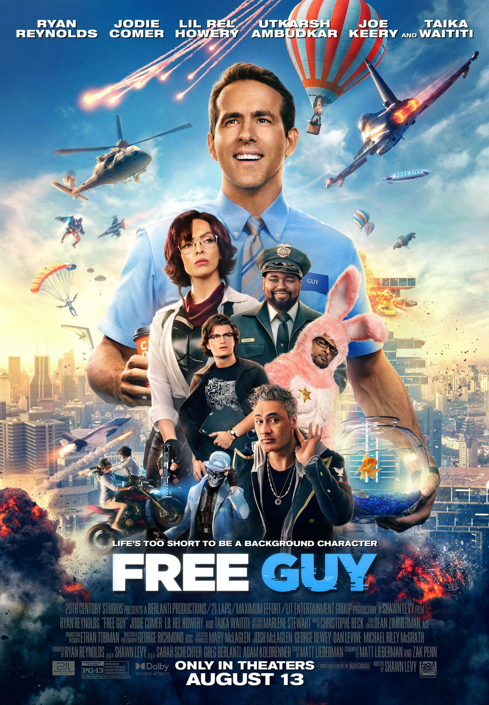

Free Guy ist ein Action-Komödien-Film, der die Geschichte eines nicht-spielbaren Charakters namens Guy in einem Open-World-Videospiel erzählt. Als Guy beginnt, sein Leben selbst in die Hand zu nehmen, wird er zum unerwarteten Helden und muss die Welt retten In "Free Guy", einem Action-Komödien-Film aus dem Jahr 2021, spielt Ryan Reynolds die Hauptrolle als Nicht-Spieler-Charakter Guy. Der Film wurde von Shawn Levy inszeniert und von 20th Century Studios produziert. Er feierte seine Premiere am 3. August 2021 in New York City und wurde am 13. August 2021 in den USA veröffentlicht. Der Film erhielt positive Kritiken und wurde zu einem kommerziellen Erfolg, der weltweit über 300 Millionen US-Dollar einspielte.
 Free Guy ist ein Action-Komödien-Film, der die Geschichte eines nicht-spielbaren Charakters namens Guy in einem Open-World-Videospiel erzählt.
Klicke mich für spoiler!